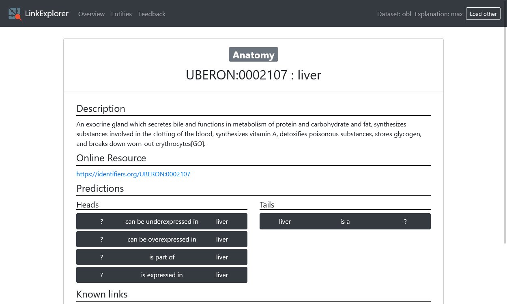
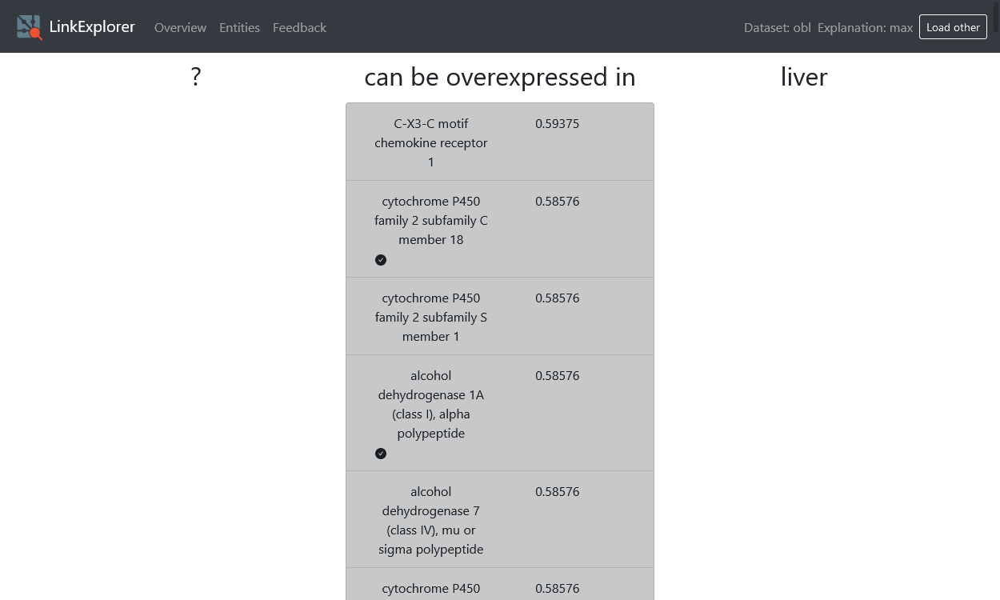
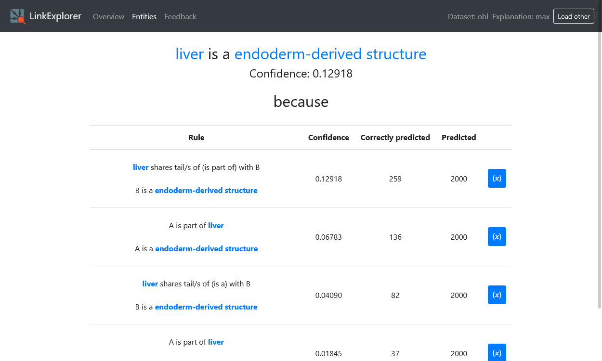

Explain¶
Select prediction task¶
View ranked predictions¶
… and their confidences. A checkmark means that this entity is in the test set (Note: this does not mean entities without a checkmark are false)
Explore rules that generated a prediction¶

Explore instantiatons of rules with variables¶
